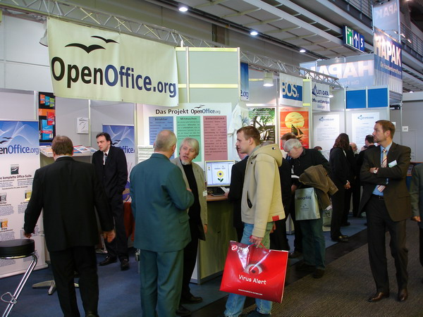
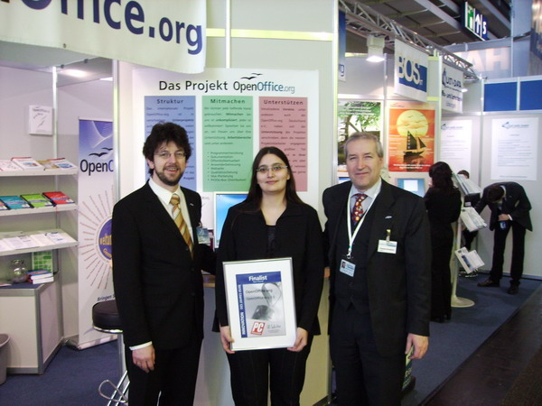

CeBIT 2006the germanophone team presented the latest version of OpenOffice.org at the CeBIT conference in Hannover, Germany (9 Mar - 15 Mar). This was the first time that the project had a booth in hall 4, it was shared with 4 other exibitors who provide services around OpenOffice.org. Many thanks to our booth volunteers, Jacqueline Rahemipour, Thomas Krumbein, Bernhard Dippold, Volker Merschmann, Simon A. Wilper, Uwe Altmann and Florian Effenberger. We had two computers on which we showed the new functions in OOo 2.0. There were a lot of sales for PrOOo-Box (a version of OpenOffice.org, bundled with templates, cliparts and other open source software), we were burning CDs constantly. The most common questions we received were "How do you make money?", "Can I import my MS Office files?" and "How do you use mail merge?". Over all we got a very positive feedback, a lot of people said "Keep up the good work!". Many IT professionals asked different aspects of migration. OpenOffice.org received the second place in innovation for the computer magazine "PC Professionell". Jacqueline Rahemipour and Thomas Krumbein represented OOo at the ceremony. We showed off the certificate at our booth for the duration of the conference. On Saturday we held a raffle for the prices of the template competition. Unfortunately, none of the winners were present at CeBIT to receive their prize. We gave two talks about OOo in the Linux Forum. On Monday Jacqueline talked on the topic "OpenOffice.org 2.0 in companies - what can the free office suite do in business?". On Tuesday Thomas, Florian and Marko talked on the topic "OpenOffice.org 2.0 in public administration - practical experiences". We'd like to thank Mediabit for the burn roboter, Shuttle Europe for providing computers for the demos and Galileo-Press for providing books. And also our partners at the booth: SCAI, O3Spaces, MultiData and BOS-IT. Photos were provided by Florian Effenberger and Thomas Krumbein. These photos can only be used with permission of the photographers and the people shown in the pictures. |
|